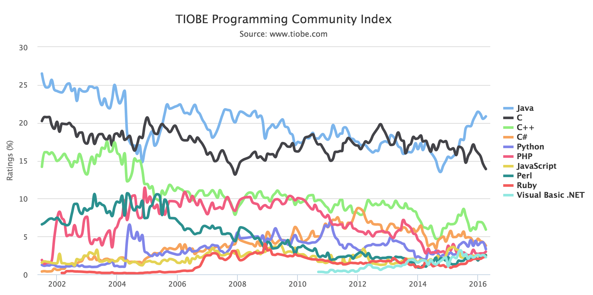
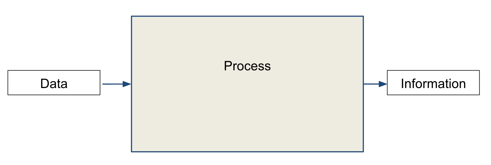
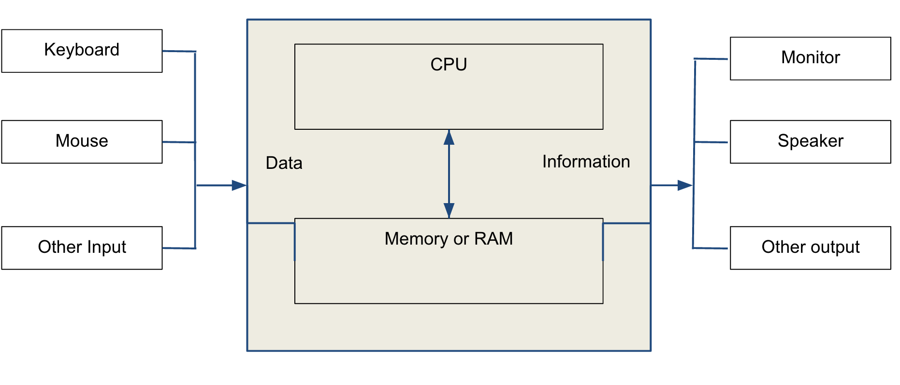
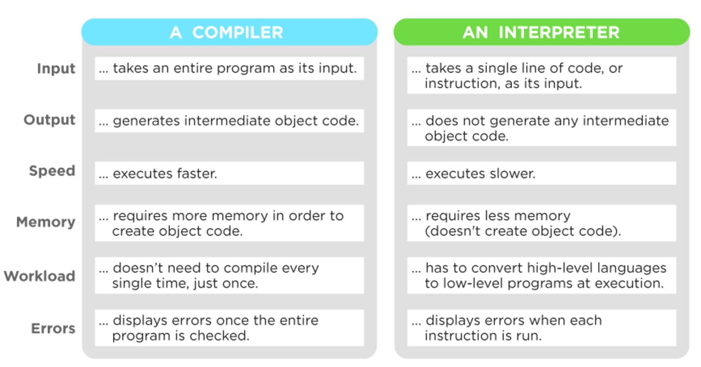

### Objectives
* To get a brief overview of what Python is
* To understand computer basics and programs
* To understand what statement, variable and expressions are
* To explain the differences between syntax errors, runtime errors, and logic errors.
Python's popularity
Python has been amongst the top 10 programming languages for more than a decade according to the Tiobe index

Before going more into details... What is a computer? (1/2)
An electronic device that is receiving data input, storing (in RAM) and processing (in the CPU) them and producing information in output.

What is a computer? (2/2)

### What is a program?
* Computer programs, known as software, are *instructions to* the computer.
* You tell a computer what to do through programs. Without programs, a computer is an empty machine. Computers do not understand human languages, so you need to use computer languages to communicate with them.
* Programs are written using programming languages.
### Different types of Programming Languages
* **Machine language** is a set of primitive instructions built into every computer. The instructions are in the form of binary code.
The programs in machine language are highly difficult to read and modify.
For example, to add two numbers, you might write an instruction in binary like this:
1101101010011010
* **The high-level languages** are English-like and easy to learn and program.
For example, the following is a high-level language statement that multiply two number:
area = 5 * 5
### Computer works using binary logic.
* It is extremely difficult for humans to program in binary.
* Computer languages have to be translated to binary logic for the computer to understand.
* Two types of translation:
* Compilation
* Interpretation
### Compilation (1/2)
* The compiler translates the entire source program into a program for the target machine (object code).
* The object code is then loaded onto the target machine and executed.
* Translation and execution are separate activities.
### Compilation (2/2)
* Advantages:
* Programs are only translated once, and the execution can be remote from the target machine.
* Execution is fast, because it is not interleaved with translation.
* The source program text does not have to be available.
* Disadvantages:
* Run-time checks are more difficult, and are usually not performed.
* Compilers tend to be large complex programs.
### Interpretation (1/2)
* A software that translates each statement of a source program and executes it to the target machine's language.
* Cycle of actions:
* Read one statement from the source program.
* Translate it into one or more statements in the target machine's language.
* Execute those statements on the target machine.
* Translation and execution are interleaved.
### Interpretation (2/2)
* Advantages:
* At run-time, the interpreter knows the current situation on the target machine, and it is therefore easier to perform runtime checks.
* Interpreters are usually small programs.
* Disadvantages:
* The interleaving of translation and execution means that programs are translated each time they are executed, and execution is therefore slow.
* The source program text has to be made available.
Comparison of interpreted vs compiled

### Python Syntax
* Statement
* Variable
* Expression
* Indentation
* Comments
Python Syntax - Statement
A statement represents an action or a sequence of actions. It does something.
To display the greeting "Welcome to Python", we use the print statement:
print("Welcome to Python")
Python Syntax - Expression
It represents something, like a number or a string. Expressions are nothing but values, except they can have operations like addition or subtraction.
1 # is an expression
2 + 3 # is also an expression
"hello" # as well
Python Syntax - Variable(1/3)
It is a space created in memory (in RAM) where we can temporarily store values or data. We use the sign '=' for assigning a value to a variable.
You can think of it like a box. For example, we store the value (or expression) 1 in the box (i.e the variable) a.
Notice that we do not specify the type of the variable, python sees it automatically. This is what we call the "duck typing" or "dynamic typing"
a = 1
Python Syntax - Variable(2/3)
You can use the type builtin function to determine the type of a value or variable
Python Syntax - Variable (3/3)
a = 1
The variable has a name so that we can reuse it. When we use a variable, it is for retrieving the value that it is holding.
Python Syntax - Indentation
The indentation is the increase or decrease of space between the left margin and the first character of the line.
The code need to be properly indented, else python will raise an error.
For example, what is wrong here?
Python Syntax - Comments
If you want to comment a line, you can use the # (pound sign) that you place before the commented line
You can also comment multiple lines using ''' (triple quote) before and after the commented paragraph
Example
### The IDE (1/2)
* We are going to familiarize ourselves with [Pycharm](https://www.jetbrains.com/pycharm/).
* Pycharm is an IDE (Integrated Development Environment), it helps you to write code with syntax highlighting, auto-completion and a lot of other features.
* Open the python terminal from Pycharm by going to: View > Tool Windows > Python Console
* The python terminal is useful for experimenting python code directly, without to run or "launch" a script
### The IDE (2/2)
* To run a python script
* Select the project that you have just created and do a right click and select "New" and "Python file"
* Notice the extension of the file that you have created, it should be **.py**
* Write ```print("Hello World")``` in the file
* You can then run the file as a python script: in the menu at the top you click on Run and Run
Experimenting with the python shell in the IDE
You can do simple arithmetic operations
x = 1 # Assign 1 to variable x
radius = 1.0 # Assign 1.0 to variable radius
# Assign the value of the expression to x
y = 5 * (3 / 2) + 3 * 2
x = y + 1 # Assign the addition of y and 1 to x
area = radius * radius * 3.14159 # Compute area
Exercise 1: run the code as a python script
After having experimented in the python shell (or python interpreter):
- Take the previous script and put it in a NEW python file.
- Run the script
Exercise 2:
Add a python file to the project
- Download the python file with this link (right click and save as)
- Run the script in Pycharm
- Change the value of the variable to create your email at city (with the extension @city.ac.uk)
- Can you explain what is the operator "+" for a string?
The different type of errors (1/3)
Syntax Error
For example, when we forget a quote to close a string
print("Welcome to Python)
The different type of errors (2/3)
Runtime Error
For example a division by zero (which is impossible)
print(1/0)
The different type of errors (3/3)
Logic error
When a program is not doing what we want it to do.
For instance, a wrong formulae for converting pound in kg
pounds = float(input("Enter weight in pound: "))
# convert pound in kilogramme
kilograms = pounds / 0.454
It should be:
pounds = float(input("Enter weight in pound: "))
# convert pound in kilogramme
kilograms = pounds * 0.454
Exercise 3:
Write a program that converts pounds into euros.
- The values can be hard coded for now (it means that the program will not be dynamic)
- Use comments
- Use variables
- Use print
The input function
myName = input()
The input() function waits for the user to type some text on the keyboard and press ENTER.
Exercise 4:
-
Write a program that ask the user what amount is to be converted in euros, convert it and display the result.
-
Hint: we are going to need the function input and the function float
Some simple Data Types in Python
-
Numeric: int, float
-
String: str
Introspection
Built in functions that enables to introspect your code
Exercise 5
Make a word that a user input in UPPER CASE, i.e. all the letters of the word should be in capital
-
Use the input function.
-
Put the word in a variable.
-
Use a built in function (the help function) to find the method for that.
-
Use print